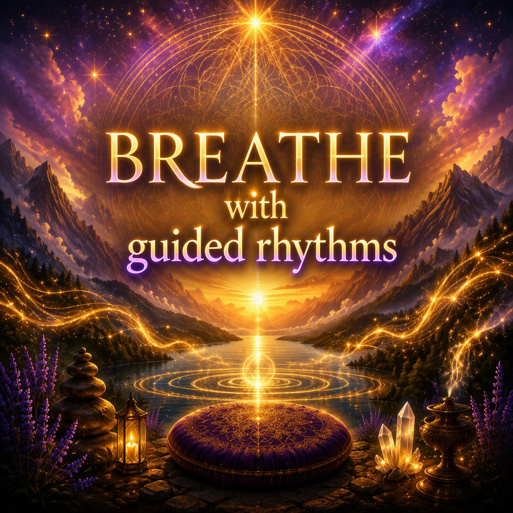

Stress Relief & Guided Breathing
5 Breathing Exercises That Reduce Stress in 2 Minutes
Feeling stressed, overwhelmed, or mentally exhausted? The good news is that you don't need an hour-long meditation session to calm your nervous system.
Research has shown that just a few minutes of intentional breathing can help reduce stress naturally, improve focus, and restore a sense of balance.
In this article, you'll discover five simple breathing exercises you can do in just two minutes. At the end, you'll also find a guided breathing tool that combines calming visuals, soothing sounds, healing frequencies, and customizable breathing patterns to make relaxation effortless.

Free guided breathing, no download required.
What Stress Does to Your Body
Stress is your body's natural response to challenges or perceived threats. When stress levels rise, the nervous system activates the "fight-or-flight" response.
This can cause:
- Increased heart rate
- Faster breathing
- Muscle tension
- Elevated cortisol levels
- Difficulty concentrating
- Anxiety and restlessness
- Poor sleep quality
While short bursts of stress can be helpful, chronic stress keeps the body in a constant state of alertness. Over time, this can affect both physical and mental well-being.
The fastest way to signal safety to your nervous system is through your breath.
Slow, controlled breathing activates the parasympathetic nervous system, helping your body shift from stress mode into relaxation mode — one of the simplest relaxation exercises available to you, anywhere, anytime.
5 Breathing Techniques for Fast Stress Relief
Each of these breathing techniques takes about two minutes and needs nothing but a quiet moment. Try one now, or save this list for the next time you need a reset.
1. Box Breathing (2 Minutes)
Box Breathing is used by athletes, performers, and professionals who need to stay calm under pressure.
How to do it:
- Inhale for 4 seconds.
- Hold for 4 seconds.
- Exhale for 4 seconds.
- Hold for 4 seconds.
- Repeat for 2 minutes.
Benefits
- Reduces anxiety
- Improves focus
- Helps regulate heart rate
2. 4-6 Relaxation Breathing (2 Minutes)
A longer exhale naturally tells the nervous system it's safe to relax.
How to do it:
- Inhale for 4 seconds.
- Exhale for 6 seconds.
- Continue for 2 minutes.
Benefits
- Quickly calms stress
- Releases tension
- Supports emotional balance
3. Coherent Breathing (2 Minutes)
Coherent breathing aims to synchronize the heart, lungs, and nervous system.
How to do it:
- Inhale for 5 seconds.
- Exhale for 5 seconds.
- Continue without pausing for 2 minutes.
Benefits
- Enhances relaxation
- Improves mental clarity
- Supports cardiovascular health
4. Triangle Breathing (2 Minutes)
A simple pattern that's easy to remember and effective when feeling overwhelmed.
How to do it:
- Inhale for 4 seconds.
- Hold for 4 seconds.
- Exhale for 4 seconds.
- Repeat for 2 minutes.
Benefits
- Grounds the mind
- Improves concentration
- Reduces nervous tension
5. Extended Exhale Breathing (2 Minutes)
This technique focuses on making the exhale noticeably longer than the inhale — a favorite for breathing for anxiety in the moment.
How to do it:
- Inhale for 3 seconds.
- Exhale for 7 seconds.
- Continue for 2 minutes.
Benefits
- Activates relaxation responses
- Helps reduce stress hormones
- Creates a feeling of calm and safety
Why Guided Breathing Works Better
Many people struggle to maintain a breathing rhythm on their own. Counting seconds can become distracting, especially during stressful moments.
Guided breathing removes the guesswork by helping you focus on:
- Visual breathing animations
- Gentle sound guidance
- Custom breathing tempos
- Relaxing frequencies
- Ambient backgrounds
- Calming instruments
Instead of thinking about the timing, you simply follow the visuals and sounds — one of the most approachable forms of mindful breathing for people who find it hard to sit still and count.
Create Your Perfect Guided Breathing Session
With Breathing Loader, you can create a personalized breathing experience by choosing:
Whether you need a quick reset before work, a calming evening routine, or a way to reduce anxiety during the day, Breathing Loader makes mindful breathing simple and enjoyable. Prefer to build your own soundscape from scratch? You can also mix your own tones and instruments in the Soundscape Creator.
"Even two minutes of focused breathing can make a noticeable difference in how you feel."
Take a Deep Breath and Start Relaxing
Instead of trying to remember breathing counts, let guided visuals and soothing sounds do the work for you.
Head to Breathing Loader and create your own personalized breathing experience today.
Frequently Asked Questions
Does breathing reduce stress instantly?
Many people notice a shift within the first minute, since slow, controlled breathing activates the parasympathetic nervous system almost right away. How fast it works varies from person to person, but even a single 2-minute session is often enough to feel a noticeable difference.
What is the best breathing exercise for anxiety?
Techniques with a longer exhale than inhale, like 4-6 relaxation breathing or extended exhale breathing, are especially effective for anxiety because a long exhale signals safety to the nervous system. Box breathing is another good option, since counting each phase gives an anxious mind something steady to focus on.
How often should I practice breathing exercises?
Even one or two short sessions a day, 2 to 5 minutes each, can make a difference. Many people use a quick breathing exercise as a reset during stressful moments and again in the evening as part of a calming wind-down routine.
Sources and References
This article is intended for educational purposes and is based on established breathing practices commonly used in mindfulness, relaxation training, yoga, and stress-management programs. Scientific research has shown that controlled breathing techniques may help reduce stress, anxiety, and physiological arousal.
- National Center for Complementary and Integrative Health (NCCIH): Stress and Relaxation Techniques.
- Balban et al. (2023), Cell Reports Medicine: Brief Structured Respiration Practices Enhance Mood and Reduce Physiological Arousal.
- Bentley et al. (2023), Brain Sciences: Breathing Practices for Stress and Anxiety Reduction.
- Brown, Gerbarg & Muench (2013), Psychiatric Clinics of North America: Breathing Practices for Treatment of Psychiatric and Stress-Related Medical Conditions.